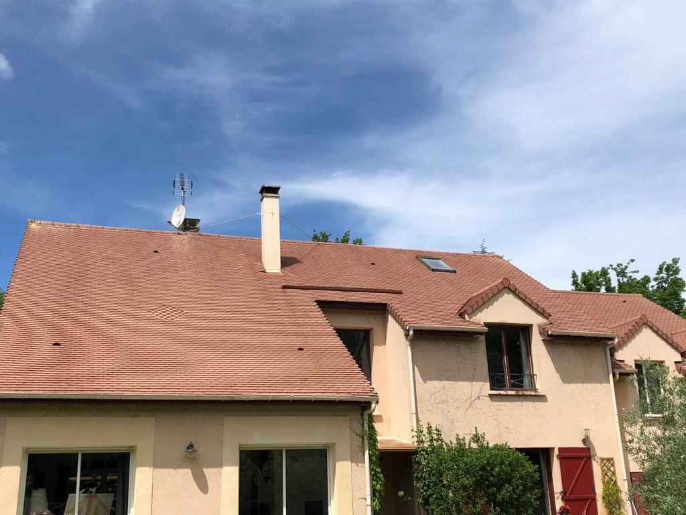
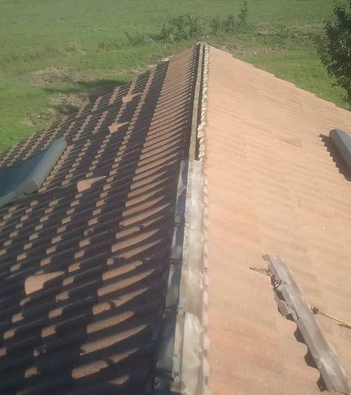
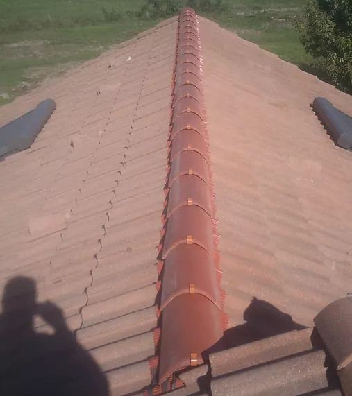
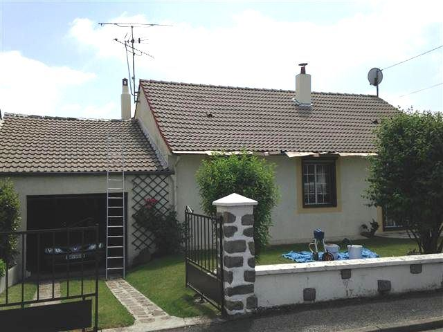
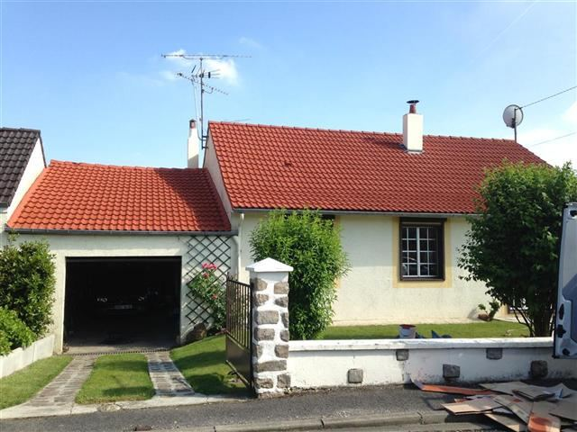
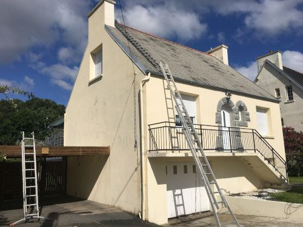
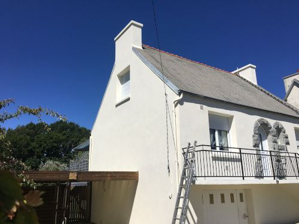
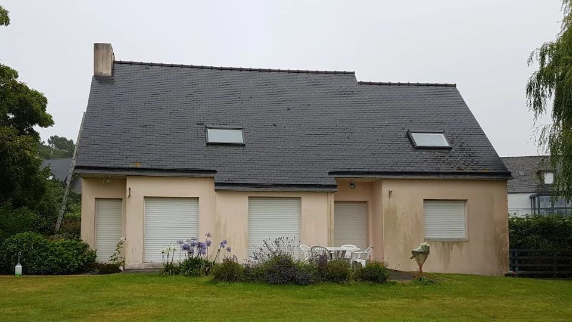

Réparation de toiture · Morlaix, Saint-Pol-de-Léon, Landivisiau
Toiture abîmée ? Paul la répare.
Tuiles ou ardoises cassées, faîtage ouvert, gouttière qui déborde, fenêtre de toit qui fuit : Paul répare élément par élément, sans vous vendre une toiture neuve.
Appeler Paul · 06 50 68 64 65Ses toitures, avant et après.
Des chantiers de Paul, photographiés avant et après son passage. Pas d’image de catalogue.

Avant
Après
Avant
Après
Ce qui coûte cher, ce n’est pas la tuile.
Une tuile ou une ardoise se remplace pour peu. Ce qui coûte cher, ce sont les semaines de pluie qui passent par le trou avant que quelqu’un monte voir.
L’isolant mouillé se tasse, le bois de charpente reste humide, le plafond se tache. Et après une tempête, l’assurance attend en général la déclaration sous cinq jours ouvrés : le devis et les photos servent au dossier.
Faire réparer mon toitComment ça se passe
- Paul vous rappelle lui-même, du lundi au samedi, pas un standard.
- Il passe voir le toit et regarde l’état réel des tuiles ou des ardoises. C’est gratuit.
- Vous recevez un devis écrit, détaillé poste par poste.
- Vous décidez. Rien n’est engagé tant que rien n’est signé.

Le prix dépend de ce qu’il trouve là-haut.
Trois tuiles à remplacer ou un faîtage à refaire, ce n’est pas le même chantier. Le prix se donne une fois le problème trouvé.
Le devis est gratuit, écrit, détaillé poste par poste. Rien ne s’ajoute en cours de chantier sans votre accord.
Ce qui fait varier le prix
- L’endroit où l’eau entre
- La hauteur et l’accès au toit
- Le matériau : tuile ou ardoise
- Le nombre d’éléments à remplacer
- Le faîtage ou la gouttière à reprendre
- Le bâchage si le toit est ouvert
Il intervient à 30 km autour de Morlaix.
Du Léon au Trégor, de Roscoff à Plestin-les-Grèves, de Carantec aux monts d’Arrée. Au-delà, demandez : il se déplace aussi plus loin selon le chantier.
- Morlaixsur place
- Saint-Martin-des-Champs2 km
- Plourin-lès-Morlaix6 km
- Taulé6 km
- Plouigneau8 km
- Pleyber-Christ8 km
- Plouezoc’h8 km
- Plougonven10 km
- Saint-Thégonnec11 km
- Lanmeur11 km
- Plougasnou11 km
- Guiclan11 km
- Carantec12 km
- Plouénan13 km
- Plouvorn14 km
- Saint-Pol-de-Léon16 km
- Locquirec17 km
- Plestin-les-Grèves17 km
- Landivisiau18 km
- Roscoff19 km
- Santec21 km
- Cléder23 km
- Sizun25 km
- Plouescat28 km
Distances à vol d’oiseau depuis Morlaix. Votre commune n’y est pas ? Un appel suffit pour savoir si le déplacement est possible.

Les questions qu’on lui pose
Pouvez-vous venir rapidement ?
Réparez-vous les fenêtres de toit ?
Changez-vous les gouttières ?
Mon assurance prend-elle en charge ?
Êtes-vous assuré ?
L’eau entre ? Appelez avant la prochaine pluie.
Décrivez où vous voyez l’eau : il vous dira quoi faire en attendant, et quand il peut passer.